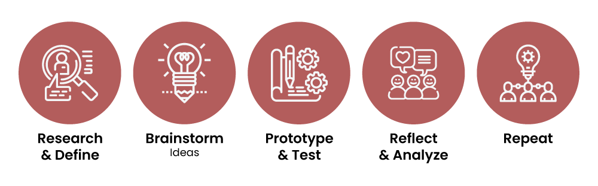

Orange County Kid's Book Festival
Inspire the love of reading and the joy of books.
Demo of final prototype
Role:
UX/UI Designer
Partners:
David Lee, UX/UI Designer
Quinn Saito, UX/UI Designer
Duration:
2 Weeks, June 2019
Orange County Kid's Book Festival is a non-profit organization that holds the largest book festival in North America annually. It's mission is to inspire the love of reading and the joy of books.
I was responsible for gathering user experience data and the development of the new website's user interface. I worked closely with my fellow UX/UI Designers, in all aspect. Particular responsibilities I had were leading the interview with the CEO and CO-Founder, Pat Burns. I used my background as a Graphic Designer to create assest and mascot elements.
Design Process
The structure of the case study will be the following:
Current State Analysis
We wanted to gain better understand of O.C. Kid’s Book Festival’s
website structure, so we dissected the main content and call to action.
In the following analysis, we primarily focused on the user experience.

Orange County Kid's Book Festival website
Donation
Call to Action
At first glance it was unclear what was the initial call to action. We realized that there was a donation button on a rotating carousel. We’ve mistaken it for a banner ad. This button took you to another page, with their paypal information, which a user can then send money to the organization to send a donation.
Become a Sponsor
Call to Action
Becoming a sponsor was the next call to action that we identified, which was also located in the carousel. This action took you to a page where they provided PDF forms for a user to download and print at home.
Volunteer Page
Information Structure
Information on the volunteer page was disorganized and cluttered. The process of signing up to volunteer led a user to a third party site to enter their information and select a committee to participate in.
Research Insights
User Interview
In order to identify potential design opportunities, we wanted to interview users to gain
insight on what they desired from non-profit events such as Orange County's Book Festival.
We also asked them browse through the existing site to see if the problems we identified were
also issues that found relevant to complete tasks.
David Lee and Quinn Saito conducting a user interview
Takeaways
• Information on the homepage is overwhelming
• I don't want to volunteer if the process is too long
• Transparency in a non-profit is the most important thing
Stakeholder Interview
We had the opportunity to sit down with the CEO and co-founder, Pat Burns.
It was important to us to have the chance to interview Pat to understand
from her words what the goal of the book festival is, but most importantly her pain points.
David Lee and Florence Pidlaoan interview CEO and Co-Founder, Pat Burns
Takeaways
• The use of the website is very limited to information
• We mostly utilizie our facebook to communicate with the community
• The struggle we face every year is gaining sponsors and volunteers for the event
User Personas
We wanted to focus on two main personas we identified during the interview process
1. Andrew Smith is a father of two, and wants to take his kids to a fun and educational event as well as get them involved in their local community.
2. Jennifer Lee is a child development grad student looking to fulfill some credits for her volunteer work.

Two major user cases for O.C. Kid's Book Festival - donator/attendee and volunteer
Pain Points
Based on our research, as a team we summarized our redesign into the main points below:
- Donation process
- Volunteer process
- Information Structure
- Rebranding
Design Opportunities
Donation Process
Problems/Concerns:
- Users were not inclined to use this process because it required too many steps and involved a third party site
- None of the links shown were active or live links
- Typeface is difficult to read